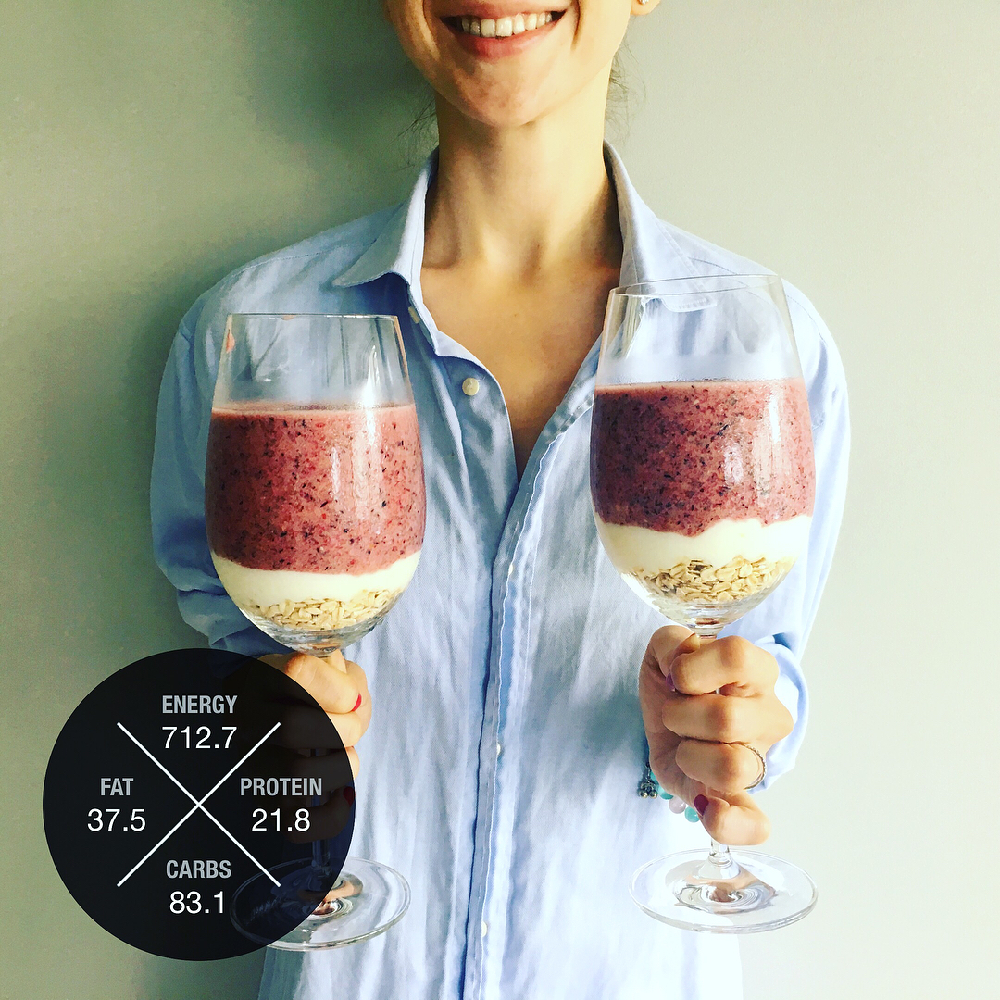

@foodbuddy team has some great news to share 😁😁! The upgraded version of our app is available on App Store! Download it now 🏁(link in bio). So what's new? Notifications when someone likes/tracks/comments your posts, capability to edit macronutrients, i.e. add extra protein powder (vegans will love it 😄), higher quality of pictures, ease of sharing - post your food to social media, message your friends or send over email - all of these are available in new version! What's next? We need your help - share your honest user feedback with us - that's the only way the app will become better for you. Download app, set your goals 🎯, search what other athletes eat around you, track your own food, know exactly what you eat and how your diet is doing against food quality categories, your carbs and protein demand 😉 have questions? Just drop us a message!
2017-10-12 22:32:35
Back to main page